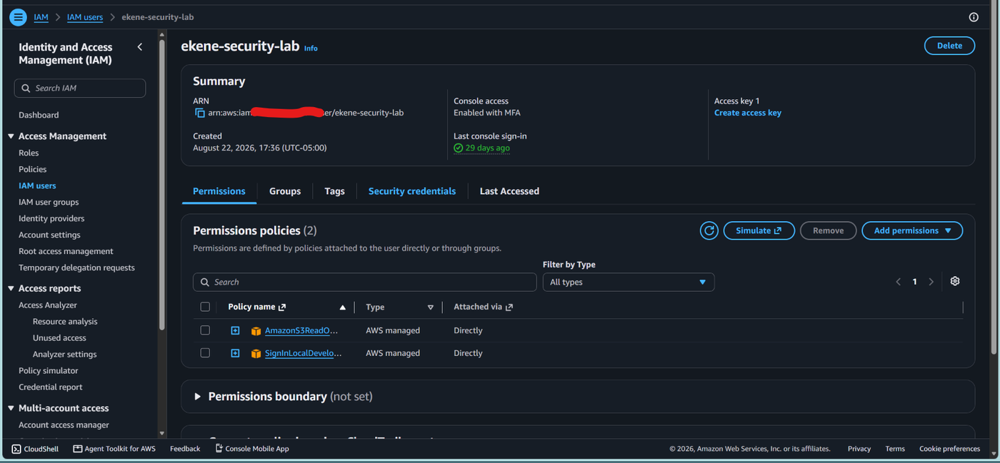
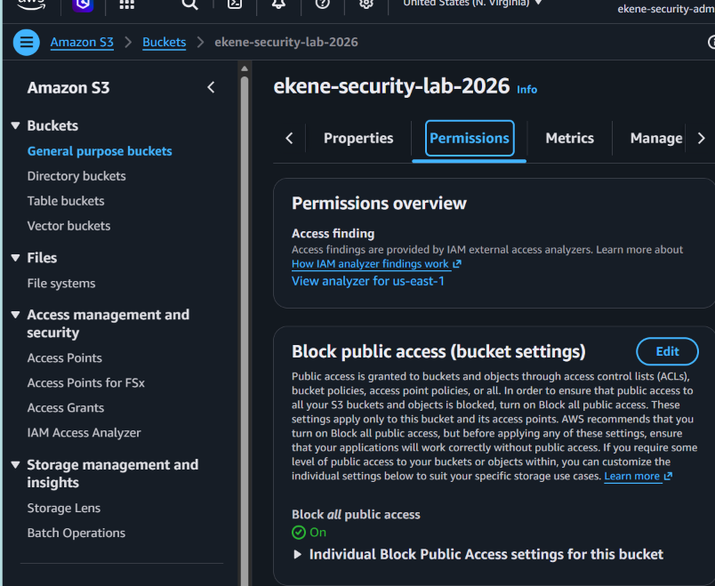
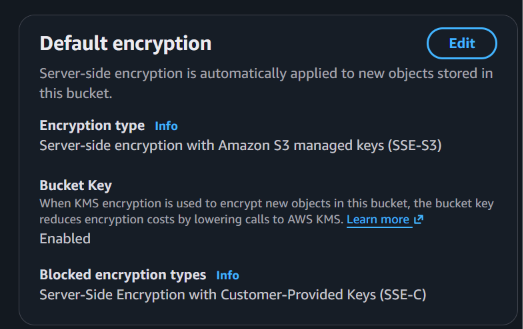
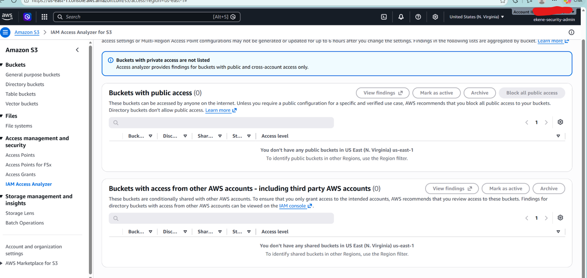
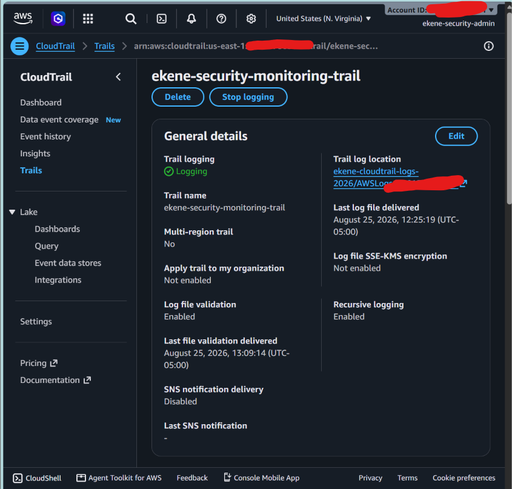
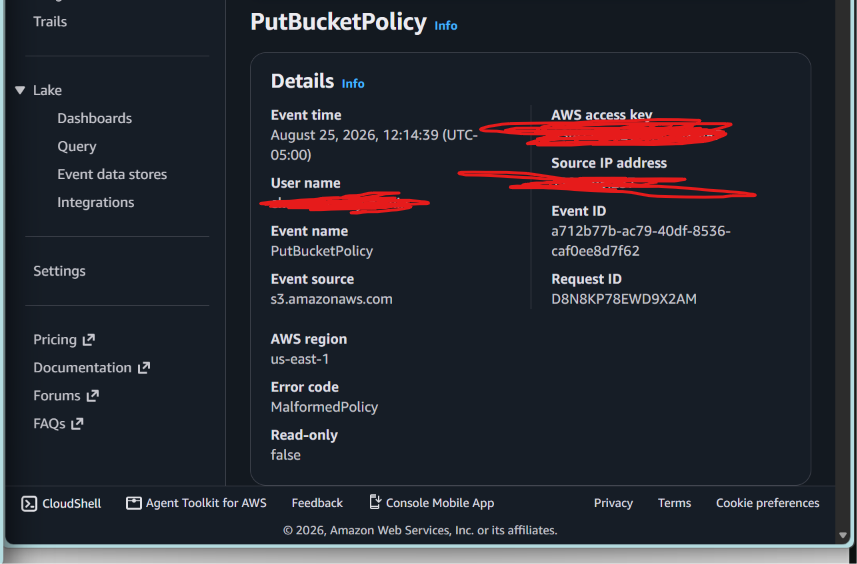
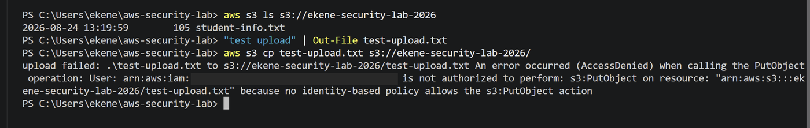
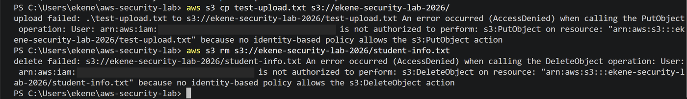
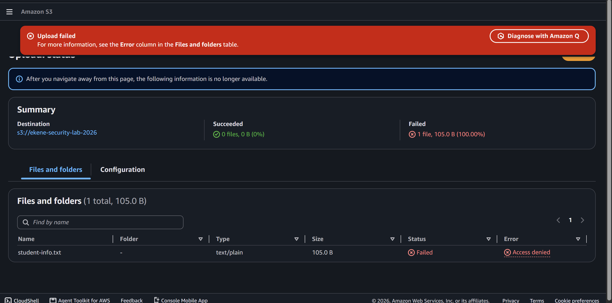

AWS Cloud Security & Threat Detection Lab
A hardened AWS environment with least privilege IAM, locked down S3, and CloudTrail monitoring, tested by attempting to break it.
- AWS
- IAM
- S3
- CloudTrail
- IAM Access Analyzer
- AWS CLI
Goal
Build a small AWS environment the way a security team would: separate identities, least privilege, locked down storage, and audit logging. Then prove the controls work by trying to get around them.
Identity and least privilege
- Created a dedicated admin IAM user for lab administration instead of routinely using the root account.
- Created a separate lab user with MFA enabled and only S3 read only access, plus the permission needed to sign in from the AWS CLI.

Locked down storage
- Block all public access turned on for the lab bucket.
- Default encryption with S3 managed keys (SSE-S3), Bucket Key enabled, and customer provided keys (SSE-C) blocked.
- IAM Access Analyzer confirmed zero buckets with public access and zero shared with other AWS accounts.



Audit logging with CloudTrail
- Created a trail that delivers logs to a dedicated log bucket, separate from the data it monitors.
- Enabled log file validation, so CloudTrail writes signed digest files that reveal if any log is altered or deleted.
- Reviewed API activity in Event history, including
CreateAnalyzerand aPutBucketPolicycall that failed withMalformedPolicy, confirming that failed changes are captured too.


Testing the controls
- Signed in as the lab user and listed the bucket successfully, which read only access allows.
- Tried to upload a file with
aws s3 cp: denied, because no policy allowss3:PutObject. - Tried to delete an object with
aws s3 rm: denied, because no policy allowss3:DeleteObject. - Repeated both actions in the console with the same result, showing the policy is enforced regardless of the tool.



Next improvements
- Make the trail multi region so activity in every region is recorded.
- Encrypt the log bucket with SSE-KMS for tighter control over who can read logs.
- Add alerting through EventBridge and SNS for sensitive calls such as bucket policy changes.